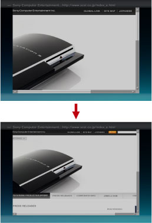

Netværk > Ændring af en websides størrelse
Ændring af en websides størrelse
Websider kan være for små eller for store, afhængigt af den kombination, der er valgt for PS3™-systemets videooutputindstilling og for det tilsluttede tv. I sådanne tilfælde kan du justere størrelsen på følgende måde.
Brug af zoom
Denne funktion forstørrer automatisk det område på skærmen, hvor markøren er placeret, til en optimal størrelse. Det optimale forstørrelsesforhold beregnes automatisk for det område, hvor markøren er placeret. Placer markøren over det område, som du vil zoome ind på. Tryk på  -knappen, og vælg derefter [Zoom] under
-knappen, og vælg derefter [Zoom] under  (Gennemse) i indstillingsmenuen.
(Gennemse) i indstillingsmenuen.
Eksempel på tekstzoom
Systemet beregner forstørrelsesforholdet på baggrund af størrelsen af det tekstafsnit, der findes i det område, hvor markøren er placeret. Derefter zoomes der ind på teksten.

Eksempel på billedzoom
Systemet beregner forstørrelsesforholdet på baggrund af størrelsen af det billede, der findes i det område, hvor markøren er placeret. Derefter zoomes der ind på billedet.

Ændring af opløsning
Denne funktion ændrer skærmopløsningen for en webside. Du kan justere websidevisningen til en størrelse, der er behagelig at se på, så den passer til PS3™-systemets videooutputopløsning. Tryk på -knappen, og vælg derefter [Opløsning] under  (Værktøjer) i indstillingsmenuen.
(Værktøjer) i indstillingsmenuen.
Hvis du har valgt [-1] eller [-2], når PS3™-systemets videooutputopløsning er indstillet til 1.080p eller 1.080i, forstørres visningen, så den bliver mere behagelig at se på. Hvis du har valgt [+1] eller [+2], når PS3™-systemets videooutputopløsning er indstillet til Standard (NTSC: 480i/PAL: 576i) eller 480p/576p, formindskes visningen, så den bliver mere behagelig at se på.
Eksempel på visning, når PS3™-systemets videooutputopløsning er indstillet til [1080i], og [Opløsning] er indstillet til [-2]

Eksempel på visning, når PS3™-systemets videooutputopløsning er indstillet til [Standard (NTSC: 480i/PAL: 576i)], og [Opløsning] er indstillet til [+2]
